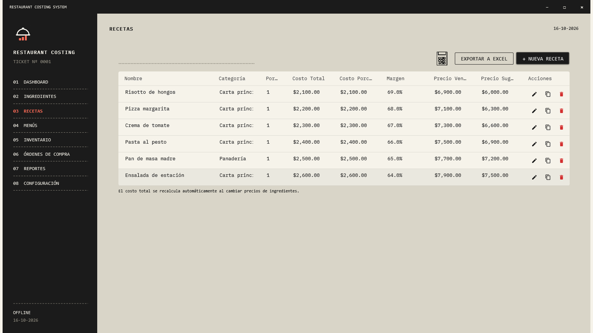
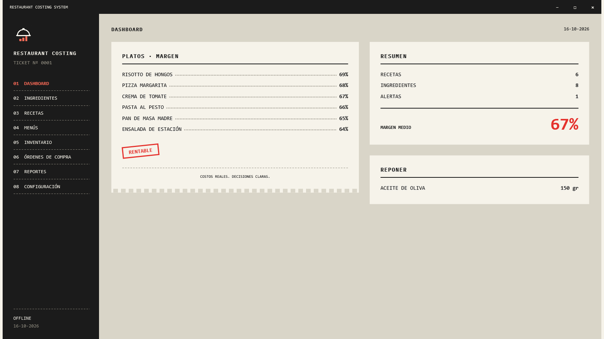
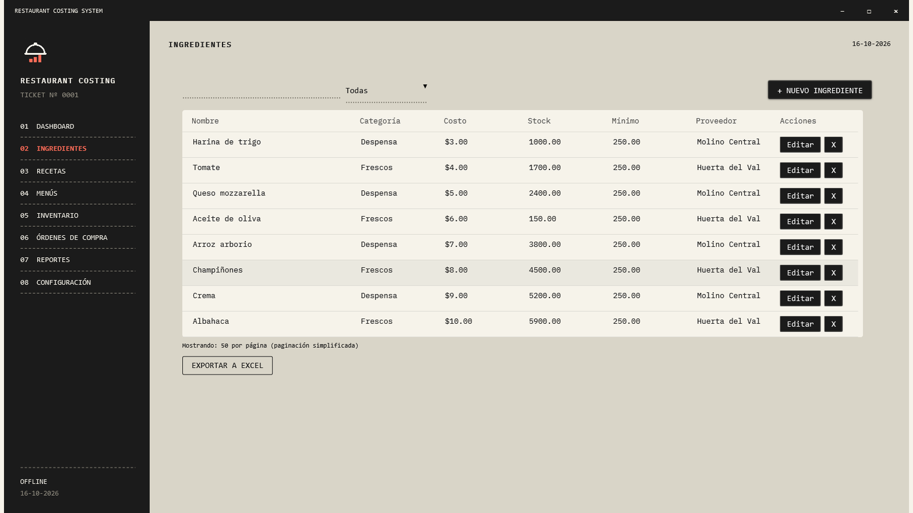
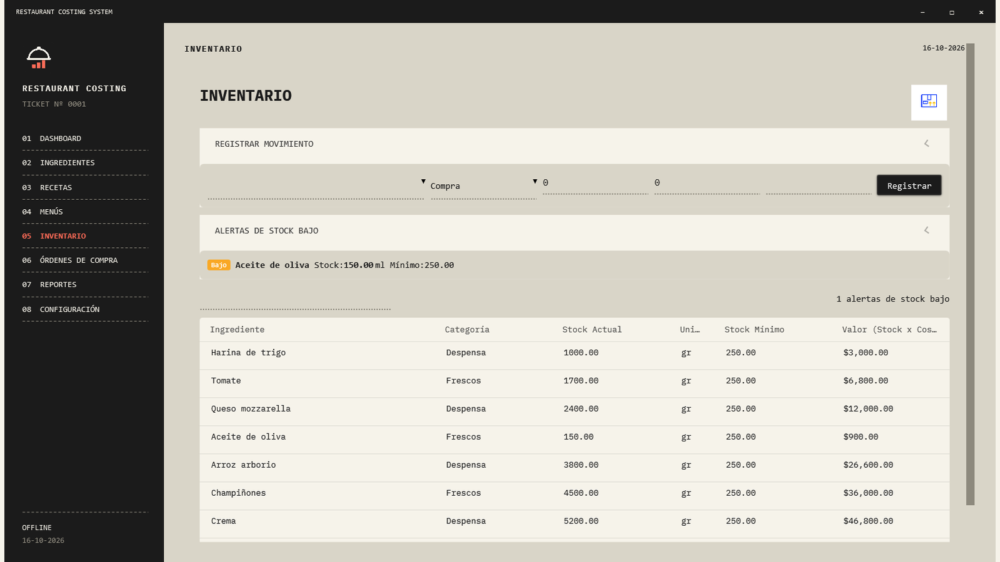
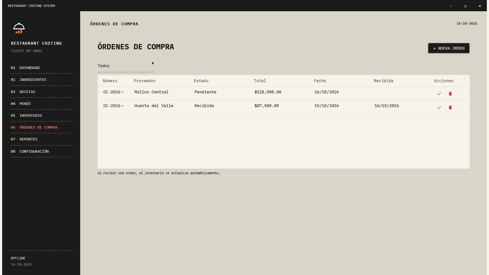

01
Put a cost on every dish
Connect ingredients and quantities to each recipe. Review total cost, cost per serving and margin before choosing your price.

MADE FOR YOUR KITCHEN · WINDOWS
Know your recipe costs, follow your ingredients and organize purchases. On your PC, without turning your day into another spreadsheet.
For restaurants, cafés, bakeries and small kitchens.

A receipt-inspired workspace, with costs and stock up front. Open any screenshot for a closer look.
FROM RECIPE TO PURCHASE
Connect ingredients and quantities to each recipe. Review total cost, cost per serving and margin before choosing your price.

Define buying and usage units, costs, suppliers and minimum stock. Keep the catalog behind your recipes in one place.

Record purchases, usage and adjustments. See available stock and spot ingredients below their minimum.

Prepare supplier orders, review their status and record receipt. Export PDF and Excel reports to review numbers outside the app.

Daily work uses local SQLite storage. Create and restore backups. Initial redemption needs internet; later local use does not.
One PC can share its database with others on the same trusted network. The server must stay on. This is not internet collaboration.
Six interface languages, local currencies and four appearances. Adjust zoom, table density and reduced motion.
ONE LICENSE. NO LOCKED MODULES.
All included features for one business at one location. No commercial cap on recipes, ingredients or that location's PCs; capacity depends on your hardware and network.
Perpetual use of the purchased software and future updates to its included features. Source code, resale and paid third-party services are not included.
$39no subscription
Buy on Gumroad ↗Available now on Gumroad. AppSumo has not approved a deal for this product.
I already have a code →FAQ
64-bit Windows 10/11. The package will include the .NET runtime; no development tools are needed. Internet is required for download and purchase redemption.
No. It covers costing, recipes, inventory and purchasing. It does not process cards or issue certified tax invoices.
No. They are stored locally. The licensing service receives your purchase email and validates your code or key; it does not receive recipes or inventory. The local database is not encrypted.
Save your recovery key beforehand from Security settings. It lets you reset your password without deleting records. Without either credential, contact support; there is no master password.
Email familiazv2016@gmail.com with your purchase email and Windows version, without sending passwords. The refund terms shown by the store where you buy apply.
It is not advertised as Authenticode-signed. Windows may show an unknown-publisher warning. SHA-256 checks integrity, not publisher identity.